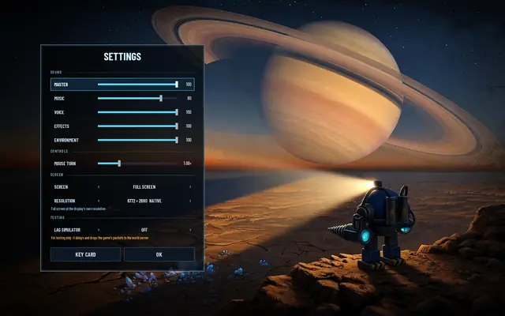
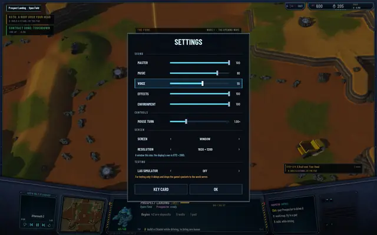
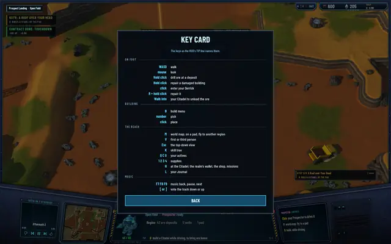
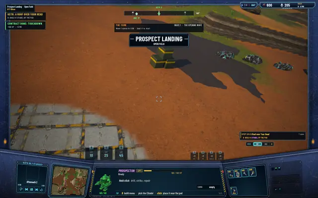

Settings: volumes, screen, a key card
The SETTINGS button has been on the home screen since the screen was drawn. Today it opens a page. The pause menu's opens the same one. It's the plain kind of work a game needs before anyone but its maker runs it, and it was checked the way a stranger's first run would go: a packaged app, a fresh config, the settings changed, the app restarted, the values read back.
What's on it
Five volumes, 0 to 100 in steps of 5, heard as they move: MASTER over everything, MUSIC, VOICE, EFFECTS and ENVIRONMENT. VOICE is new. It's the spoken words, KSTR's radio lines and the narrations, and the radio's own duck rules still sit on top of it, so a line still lowers the music while it plays. EFFECTS covers shots, tools and the units' report-ins; ENVIRONMENT the wind, rain and hum. A MOUSE TURN slider for the driven unit, a quarter to three times. SCREEN, full screen or a window, and RESOLUTION from the display's own modes: full screen up to the display's own size, marked NATIVE, which is borderless and leaves the display alone; a window only at sizes smaller than the display, so it fits on the screen. Those two apply on OK, and Esc keeps the screen you had. A LAG SIMULATOR switch under TESTING, off or the two-client check's preset of 150 ms each way and 5% loss, with an orange line saying what it's for. And a KEY CARD: every key as the HUD's tip line names it, in four groups, on foot, building, the Reach, music. Read only for now; there's no rebinding yet.
Where it lives, and the check
Everything is kept in the engine's own config file, read at start. A first run with no file gets full screen at the display's resolution, music at 80, voice and effects at 100, the lag off. The engine itself copies a window's real size back into the settings whenever the window is resized, so the stored size is always the one the window got. The check ran on a Development package with the hidden-run tool and a config folder of its own: from the home screen to the field and back, the settings changed, the app restarted, the values read back as set. Nothing changed on the wire or in the save; the suites stand at 511, 102 and 341. A smaller thing rode along: the hunt's toasts, which were cut short on the screen, now read whole.

From the home screen, at the defaults.
From the pause menu: the voice turned down to 55, a 1920 × 1200 window picked.
The key card, in the HUD's own words.
The field in the 1920 × 1200 window after OK.